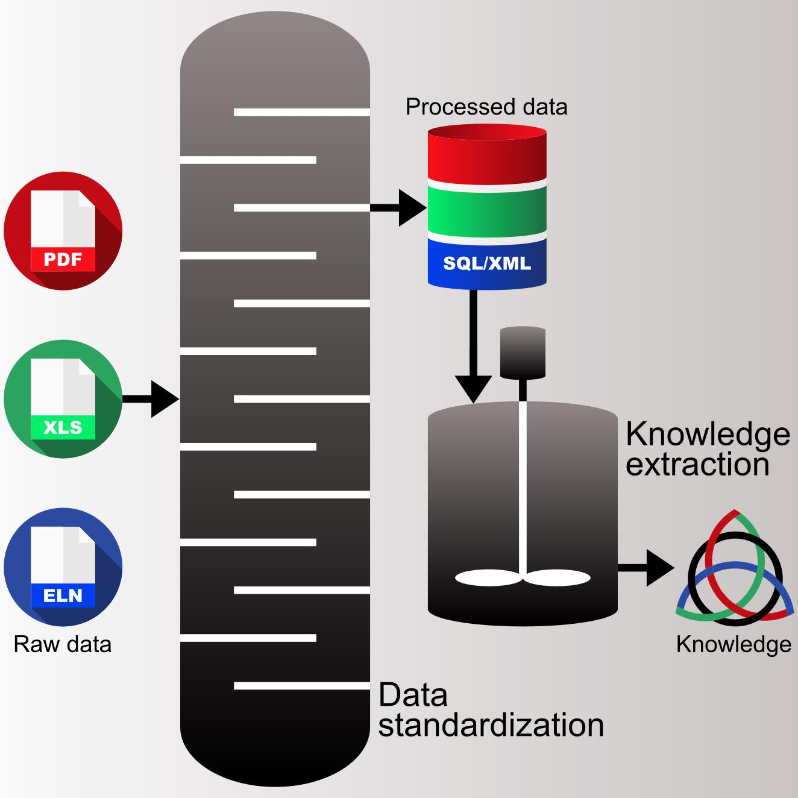
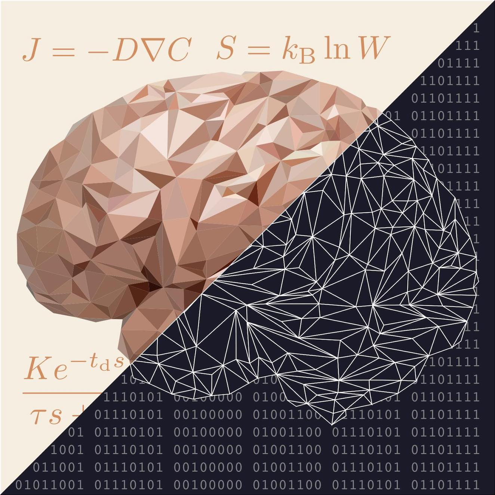
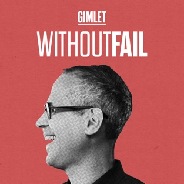
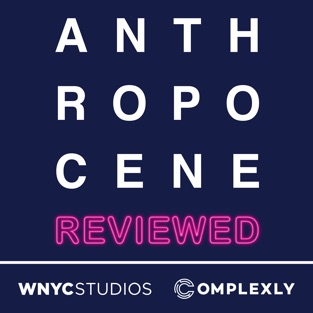

About
Created: 2014-03-06. Modified: 2020-01-18
What are my core research interests?
My core research interests are data, complex systems, and the human factor under the general theme of decision-making. How to make better decisions is a fundamental question for individuals, organizations, and societies, and there is no easy answer. Systems research, especially process systems engineering (PSE), with the help of artificial intelligence (AI), is the approach I’ll focus on to tackle some of the decision-making challenges in chemical engineering, biomanufacturing, and society.
| Data | Complex Systems | Human Factor |
|---|---|---|
|  |  |  |
Data have now become one of the most valuable resources in various industries because of the recent advances in machine learning (ML). Like natural resources, data can be scarce, abundant, or messy, prompting distinct approaches to data-driven decision-making problems. I am interested in employing optimal experimental design (OED) methods to generate data efficiently (when data are scarce), extracting information about underlying dynamics and causality from open data (when data are abundant), improving data management in biopharmaceutical research (when data are messy), and using hybrid models to develop explainable artificial intelligence (XAI) applications (when data-driven models are opaque).
The problem is not that today’s AI needs to get better at what it does. The problem is that today’s AI needs to try to do something completely different. (Gary Marcus and Ernest Davis, 2019)
Feedback phenomena, networks, and multiple interacting agents are prevalent characteristics of both biological systems (e.g., metabolism) and artificial systems (e.g., chemical processes, social networks). The underlying nonlinearity and uncertainty make these systems challenging to understand, predict, and manage. My research falls into three broad categories: 1) systems biology through agent-based modeling (to understand system dynamics), 2) identification and prevention of unintended negative consequences using process hazard analysis (PHA) and data-driven techniques (to predict system behaviors), and 3) biomedical applications based on control theory (to manage system outcomes).
There is only one difference between a bad economist and a good one: the bad economist confines himself to the visible effect; the good economist takes into account both the effect that can be seen and those effects that must be foreseen. (Frederic Bastiat, 1850)
In the AI era, it is worth re-considering the role of human decision-making—algorithms should assist, not replace, humans. In my opinion, creating any algorithmic, human-in-the-loop decision-making tool needs to have a basic understanding of human behavior and design such a tool with intentions. Unlike quantifiable objectives in process design, e.g., productivity and product quality, intentions are human-facing and more subtle. I am interested in borrowing the intention-based design principles from industrial and user experience design and developing tools for process monitoring (how to prioritize data visualization), detection and diagnosis (how to diagnose problems like a human operator or medical doctor), and safety (how to prevent runaway situations caused by either algorithm glitch or human error).
Most people make the mistake of thinking design is what it looks like. People think it’s this veneer—that the designers are handed this box and told, “Make it look good!” That’s not what we think design is. It’s not just what it looks like and feels like. Design is how it works. (Steve Jobs, 2003)
| Research Interests and Topics |
|---|
What am I working on now?
I am currently a postdoctoral researcher at the University of Delaware. My research involves the modeling, design, and control of cell culture and glycosylation processes in the manufacture of therapeutic monoclonal antibodies (mAbs).
- Nature podcast: Monoclonal antibodies, from basic science to blockbuster drugs (link)
- Ajit Varki: Nothing in glycobiology makes sense, except in the light of evolution (PDF)
What about my Ph.D.?
My doctoral thesis is on multi-agent control in sociotechnical systems. I am interested in understanding the collective dynamics of interacting, intelligent individuals in a crowd. From a control theory angle, once we know how opinions and decisions evolve and respond to social feedback, we can design mechanisms that improve the collective decision-making process. In other words, how do we make a crowd “smarter” by providing useful feedback? I have also worked on topics such as income inequality, opinion dynamics, and managing systemic risk in finance, insurance, public health, high-frequency trading, and mining safety.
- James Surowiecki: The Wisdom of Crowds (link)
- Cass Sunstein: Wiser (link)
- Richard Thaler and Cass Sunstein: Nudge (link)
- Venkat Venkasubramanian: How Much Inequality Is Fair? (link)
Whom have I worked with so far?
| Name | Field | Role |
|---|---|---|
| Michael J. Betenbaugh | Bio | Collaborator |
| Richard Bookstaber | Finance | Collaborator |
| Brian Burk | Finance | Collaborator |
| Paul Glassman | Finance | Collaborator |
| Mila González | Public health | Collaborator |
| Sanjay Gupta | Finance | Collaborator |
| Garud Iyengar | Optimization | Advisor |
| Adrian Wing-Keung Law | Civil engineering | Advisor |
| Matthew J. Lazzara | Bio | Collaborator |
| Dong-Yup Lee | Bio | Advisor |
| Stephen S. Morse | Public health | Collaborator |
| Babatunde A. Ogunnaike | Systems | Advisor |
| J. Vincent Price | Bio | Collaborator |
| Anne S. Robinson | Bio | Collaborator |
| Gene Schaefer | Bio | Collaborator |
| Rajiv Sethi | Economics | Collaborator |
| Jay Sethuraman | Economics | Collaborator |
| Raghu Shivappa | Bio | Collaborator |
| Nick Silitch | Finance | Collaborator |
| Venkat Venkatasubramanian | Systems | Advisor |
| Albert Zhizun Zhang | Finance | Collaborator |
What do I do for fun?
My “extracurricular” activities are always evolving; I taught myself piano, music composition, and painting. Right now, I am a podcast addict. Below are a few of my favorite.
 |
 | ||
|  | |||